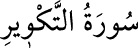

81- et-TEKVÎR SÛRESİ
Mekke’de inmiştir, 29 âyettir. Sûrenin başında güneşin dürülmesinden söz edilmiş
ve adını da buradan almıştır. Sûrenin söz dizisinde, ihtiva ettiği konuya ilişkin
anlamları yankılandıran ve güçlendiren mükemmel bir musikî, taklit edilemez bir
âhenk vardır.